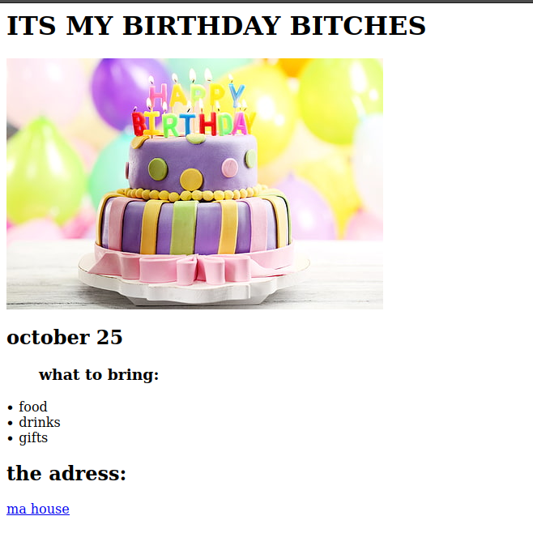
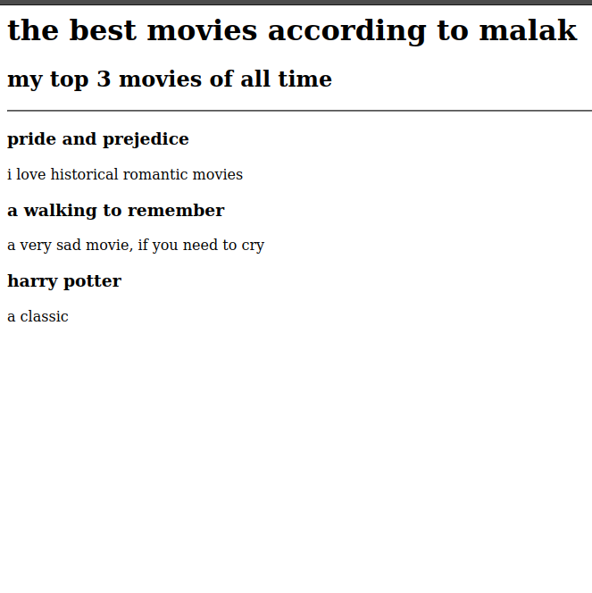

<h1>MELEK KANAKRI</h1>

<a href="./assets/images/malaaaak.png" >  <h2>Birthday project</h2> </a>

<a href="./assets/images/mmmmovies.png"> <h2>Favourate movies project</h2> </a>

<a href="./public/about.html"> <h3>About me</h3></a>

<a href="./public/contact.html"> <h3>contact me</h3></a>

<!-- TODO 6: Add images to show the project previews
HINT for TODO 6: You can use the height attribute set to 200 to make the image smaller:
https://developer.mozilla.org/en-US/docs/Web/HTML/Element/img#attr-height -->

<!-- TODO 7: Add the Contact Me and About Me page links -->